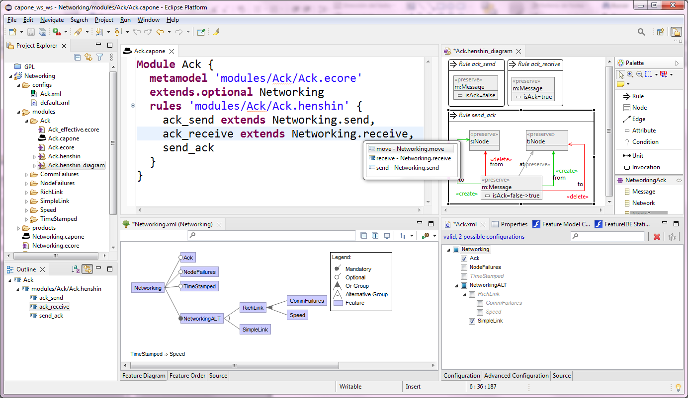

Capone
Capone
Modular Language Product Lines
- Install from Update site
- View on GitHub
- Try some Examples
Welcome to  Capone
Capone
Capone is a tool to engineer families of modelling languages using a product line approach. The tool supports a modular specification of both the abstract syntax (through a meta-model) and the semantics (via graph transformation rules using Henshin).
